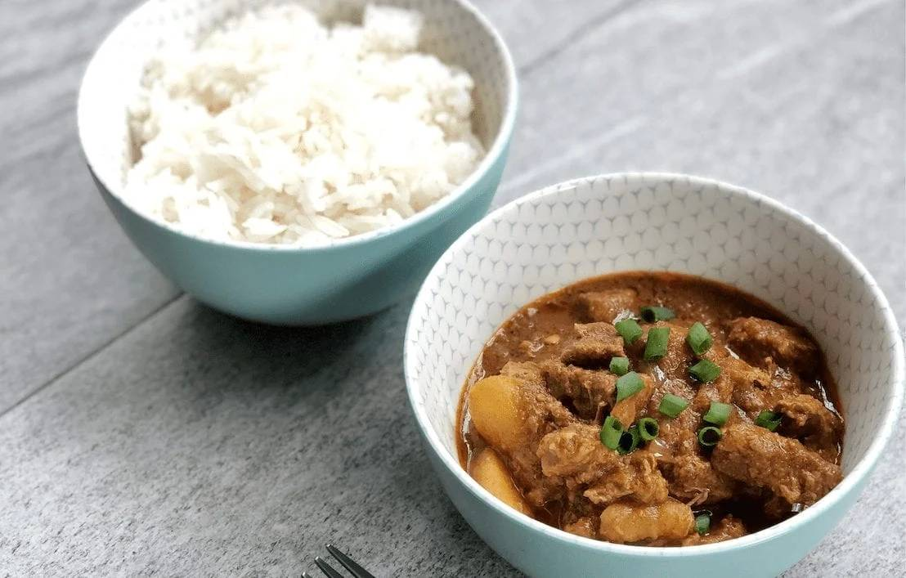

Rendang

Before we start, let me give you a quick context into this rich and flavor-packed dish. Rendang is a classic dish of Southeast Asian cuisine. While there are countless variations to this dish, Rendang is originally an Indonesian spicy meat stew that came from the Minangkabau region in West Sumatra.
Another interesting point is Rendang can be made with any cuts of meat, or even vegan substitutes! That said, rendang is most commonly made with beef, slow cooked and braised in a fragrant blend of coconut milk and rich spice mixture. The result? An incredibly flavorful and tender beef stew, perfectly caramelized and infused with fragrant spices.
Original recipes for rendang call for the mixture to be simmered for 5-6 hours. While this is still the preferred method of cooking in many Indonesian restaurants, I’ll be showing you a shorter version (1 hour and 40 minutes!) that don’t sacrifice on the rich flavor and tender texture.
Ingredients
- 2 lbs boneless beef short ribs
- ¼ cup + 1 tbsp oil
- 1 stick cinnamon
- ½ onion, chopped
- 4 shallots, chopped
- 3 cloves garlic, minced
- ¼ tsp ground star anise
- 1 tsp ground cardamom
- 1 tsp turmeric
- 3 tbsp lemongrass paste
- 1 cup full-fat coconut milk
- 1 cup water
- 3 tsp tamarind paste
- 5 tbsp toasted coconut flakes
- 1 tbsp palm sugar
- 2 tsp chili paste, adjust as needed
- salt and pepper, to taste
- 2 tbsp ginger paste
- 2 tbsp lime juice, for serving
- 4 cups cooked jasmine rice, for serving
- chopped scallions (optional)
How To Make:
- Heat olive oil oil in a large pot. Add the onions, garlic, shallots, ginger paste, cinnamon, cloves, star anise, turmeric, and cardamom. Stir until fragrant and onions are transluscent.
- Add in the beef, lemongrass paste, and chili paste. Simmer for 2 minutes. Then add the coconut milk, water, tamarind paste. Stir for 5 minutes. Then add the toasted coconut flakes, salt, pepper, and palm sugar. Give it a good stir, then cover. Simmer on medium heat for 90 minutes, or until meat is very tender and sauce has reduced.
- Serve with steamed jasmine rice. Garnish with a squirt of lime juice and sprinkle with chopped scallions (optional). ENJOY!
Cuts of Meat and Vegan Substitutions for Rendang
- If slow-cooking the beef for 5-6 hours, use chuck beef. If cooking for a shorter time as in this recipe, use boneless short ribs.
- Beef can also be substituted with chicken, lamb, turkey, buffalo, or duck. Alternatively, you can substitute with jackfruit, tempeh, or other vegan meat substitutes. Keep in mind that cooking time will vary depending on your protein substitution.
Back to recipe list